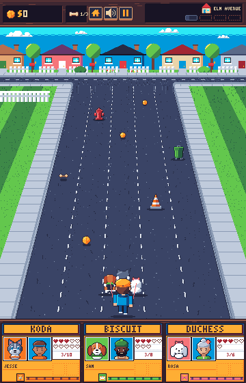
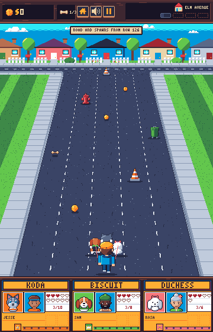
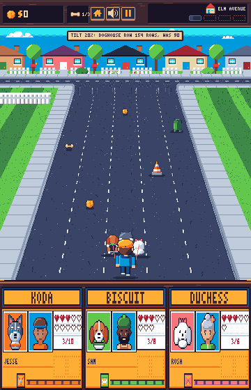
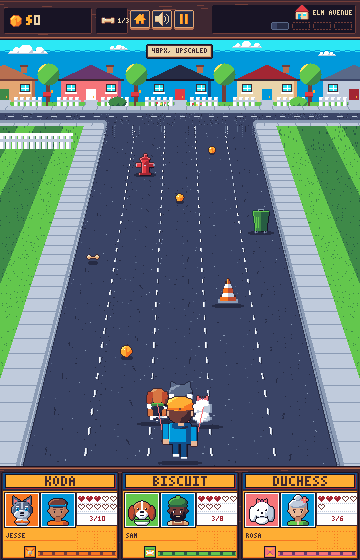
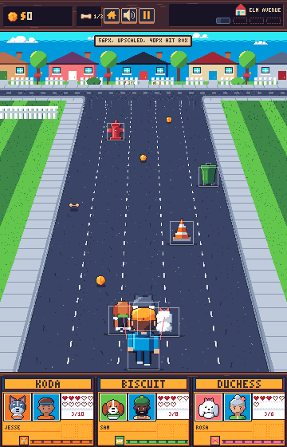
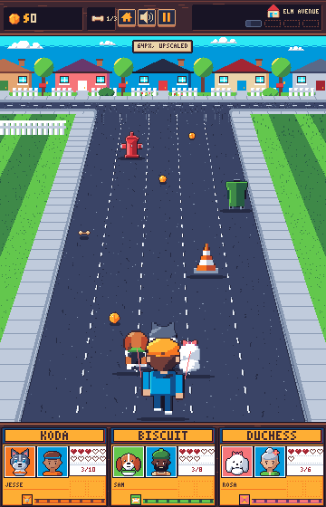

Walk camera
Three proposals for the walk screen, each beside the current build. Every frame is the same scene: Elm Avenue, Casey with Koda, Biscuit and Duchess in lane 3, and tips, a treat, a cone, a bin and a hydrant at 180 to 880 road px ahead. Nothing here is built.
Current build
Camera: horizonY -164, focal 900, ratio 0.698, farY 150, scale 0.5 at the far edge, feet on row 464. The road in view is 900 road px, 4.5 s at 200 px/s. Rows 126 to 149 under the cross street are the backdrop's painted stub: the road surface scrolls over it but its top 12 rows dither into the backdrop's bottom row and its verges are painted, so it reads as still. Spawns come into view on row 150.
1. Road from the juncture
The road, its markings, the verges and spawns start on row 126, where the cross street's near sidewalk ends. Only the band above it (sky, houses, cross street) stays still.


2. Tilt
The road's 320 rows shrink by 20% (the main option) or 25%. The far edge stays at scale 0.5 so the backdrop still joins, and the look-ahead shrinks in step. The camera numbers below keep the feet on row 464 and move farY down; the freed rows then go to the doghouse row, so the frames draw the whole walk view moved up by them and stretch the current doghouse cards to fill. The ground under the feet keeps its screen speed (ratio about 0.69), and objects shrink faster with distance.

Costs: the backdrops need a rebuild for the new camera, since the stub's road edges no longer match the road's slope (the kink at row 150 in these frames); the doghouse cards need a taller layout for bigger hearts, faces and tap targets rather than this stretch; the heart labels and quip lane move with the doghouse row; spawns arrive 0.9 s or 1.1 s later.
3. Bigger objects
Dogs, Casey and the cone, bin and hydrant drawn as if 48, 56 and 64 px, Casey 1.5x as tall (72, 84, 96 px), on the current 64 px lanes. Upscaled nearest-neighbour from the 40 px art for this mock only. The pack's formation, hands and collars scale with size: the pack of 3 spans 80 px today, then 96, 112 and 128 px (two lanes). Tips and the treat stay as they are.



Costs: every dog, walker and road object redrawn at the new size with its depth steps, and the formation, leash anchors and pack bands retuned.